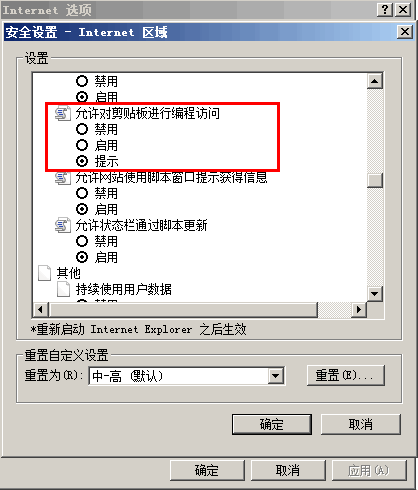

无
IE 支持使用 window.clipboardData 对象内的一系列方法访问系统剪贴板；
Chrome 和 Safari 中存在类似的 Clipboard 对象，且有与 IE 中类似的方法，但其功能尚未实现；
Firefox 和 Opera 不支持这类对象。
若作者在需要访问剪贴板时仅仅考虑 IE 浏览器而使用了其专有的 clipboardData 对象，则在其他浏览器中可能导致功能无效且代码报错。
| 非 IE 浏览器 |
|---|
现代操作系统中均提供了系统剪贴板（clipboard），它允许用户在不同的运行中的应用程序之间传递不同类型的数据。如：复制、粘贴等等。剪贴板已经成为最常用的一种不同进程间交换数据的方式。
有时候页面作者在 HTML 页面中也希望可以通过某种方式能否有权访问系统剪贴板，但处于安全的考虑，不是所有浏览器都提供实现访问剪贴板的接口。
如以下代码：
<script> window.clipboardData.setData("Text", "Hello");
</script>
上面的代码只有在 IE 中可以将“hello”这个字符串复制到操作系统的剪贴板中，“Text”表明作为文本，在其他浏览器中则产生如下报错：
| Firefox | window.clipboardData is undefined |
|---|---|
| Chrome | Uncaught TypeError: Cannot call method 'setData' of undefined |
| Safari | TypeError: Result of expression 'window.clipboardData' [undefined] is not an object. |
| Opera | Statement on line 2: Cannot convert undefined or null to Object stacktrace |
出现此错误是因为 window.clipboardData 为 IE 专有，其他浏览器均没有此对象。更多关于 clipboardData 对象，参见 MSDN：clipboardData Object。
在 IE7 及更高版本的 IE 浏览器中，默认情况下会出现访问剪贴板的提示，通过浏览器菜单“工具 -> internet 选项 -> 安全 -> 自定义级别” 步骤可以设置剪贴板访问提示。

下表列出了其他非 IE 的主流浏览器对访问剪贴板的支持情况：
| Chrome Safari |
Clipboard 对象：
虽能看到存在此接口，但其内的方法并未实现其功能，所以在 JavaScript 中无法调用。 |
|---|---|
| Opera | 无操作剪贴板的对象。 |
| Firefox | Firefox 中由于对用户权限设置较高，需要修改 Firefox 的配置文件以允许浏览器支持剪贴板操作。较通用的做法是： try {
netscape.security.PrivilegeManager.enablePrivilege("UniversalXPConnect"); } catch (e) {
alert("被浏览器拒绝！\n请在浏览器地址栏输入'about:config'并回车\n然后将
'signed.applets.codebase_principal_support'设置为'true'"); } 在访问剪贴板上，首先修改 Firefox
的配置文件，若无法修改，则通知用户自行进入管理界面修改配置文件参数。然后才有权限对剪贴板进行操作。 var clip =
Components.classes['@mozilla.org/widget/clipboard;1']
.createInstance(Components.interfaces.nsIClipboard); if (!clip) return; var trans =
Components.classes['@mozilla.org/widget/transferable;1']
.createInstance(Components.interfaces.nsITransferable); if (!trans) return;
trans.addDataFlavor('text/unicode'); var str = new Object(); var len = new Object(); var str =
Components.classes["@mozilla.org/supports-string;1"]
.createInstance(Components.interfaces.nsISupportsString); var copytext = txt; str.data = copytext;
trans.setTransferData("text/unicode",str,copytext.length*2); var clipid =
Components.interfaces.nsIClipboard; if (!clip) return false;
clip.setData(trans,null,clipid.kGlobalClipboard); alert(" 复制成功！") |
if (navigator.userAgent.indexOf("MSIE") == -1) { alert("您的浏览器不支持此功能,请手工复制文本框中内容"); return false;
}
| 操作系统版本: | Windows 7 Ultimate build 7600 |
|---|---|
| 浏览器版本: |
IE6
IE7 IE8 Firefox 3.6 Chrome 5.0.342.2 dev Safari 4.0.4 Opera 10.50 |
| 测试页面: | 无。 |
| 本文更新时间: | 2010-08-09 |
clipboard clipboardData 剪贴板 系统 配置文件 Flash Zero